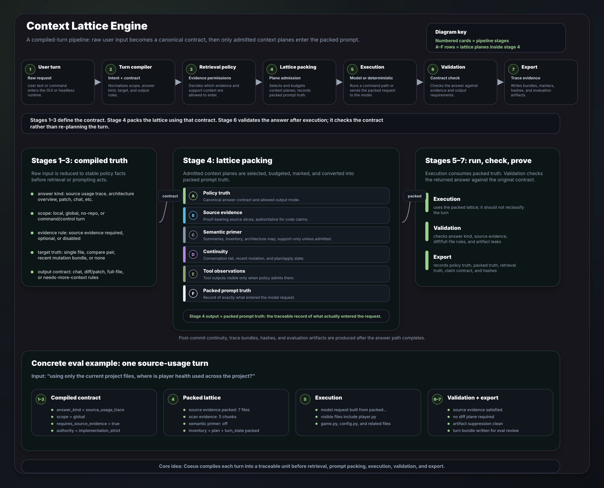

Better verifiability
Coeus keeps project inventory, retrieved source evidence, continuity, and final claims separate so answers can be checked against what was actually packed.
A model-agnostic, configurable AI desktop workspace for working with software projects. Coeus was built to make LLM usage more transparent, adaptable, private, and efficient: local project context, source-grounded answers, configurable provider choices, and less dependence on slow web chat workflows or giant unstructured conversations.
Instead of treating an LLM as a generic chat box, Coeus turns each request into a structured project-aware turn: what is the user asking, what files are relevant, what evidence is allowed, what workflow should run, and what telemetry proves how the answer was produced.
Public release scope: this is a portfolio/demo package. It presents the product idea, user problem, technical architecture, Context Lattice Engine diagram, demo release, evaluation summaries, screenshots/video guidance, and generated public reports.
Technical review scope: the full proprietary source code, prompt internals, raw trace bundles, validator internals, provider configuration, local project data, and headless harness are not included in the public repository. A review package can be shared separately with architecture notes, source-tree structure, codebase metrics, selected implementation evidence, screenshots, and evaluation material.
AI coding assistants are powerful, but they often become opaque. They can lose track of the current project, answer confidently without showing what files they used, mix memory with evidence, and force users into slow web-chat workflows where context becomes huge and hard to verify.
Coeus AI was built as a desktop-first alternative: a transparent workspace where project context, retrieval, model choice, workflow routing, and telemetry are part of the product, not hidden behind a single chat prompt.
The goal is practical: give developers better control over how LLMs are used, make answers easier to verify, support local/private project workflows, and keep the assistant adaptable as models and providers change.
Coeus keeps project inventory, retrieved source evidence, continuity, and final claims separate so answers can be checked against what was actually packed.
The design is model/provider agnostic, letting the workspace adapt to different LLM backends, privacy needs, power requirements, and workflow preferences.
A desktop project workspace avoids relying on giant pasted conversations and keeps codebase context closer to the actual working environment.
The Context Lattice Engine is the core design behind Coeus. In simple terms, it is the layer that decides what a user is asking, what evidence is allowed, what project context should be packed, what workflow should run, and what trace proves the result.
Coeus does not treat retrieval as the only source of truth. Retrieval is one input into a compiled-turn pipeline. The system separates policy truth, retrieved files, packed prompt context, continuity state, and final-answer validation.
This visual shows the end-to-end path from raw user input to exported trace evidence. The lattice stack represents the context planes that may be admitted into a turn.

Diagram unavailable. Open the SVG directly.The diagram is the quickest technical summary of the project: user request → contract → retrieval policy → packed evidence → execution → validation → trace export.
What kind of answer is allowed, and what must be proven?
Which source, summary, memory, or tool planes may enter?
Which admitted planes actually fit into the prompt budget?
Was the turn served deterministically or through a model request?
Did the final answer satisfy the evidence and output contract?
What trace bundle proves how the turn was handled?
The compiled contract: answer kind, output mode, evidence requirements, and route constraints.
The files, chunks, and search results actually found from the current project surface.
The exact context planes that actually entered the model request after budgeting.
Conversation and workflow state. Useful for routing, but not proof unless admitted as evidence.
The final answer must match the compiled contract and available evidence.
Implementation boundary: this page describes the architecture and behaviour at a portfolio level. Exact algorithms, trace schemas, validator internals, prompts, complete implementation files, and the full proprietary source code are not included in the public package.
Coeus AI is a substantial native AI tooling project, with measurable evaluation outputs, public demo material, and private technical-review evidence available on request.
Built from initial prototype work through a packaged public demo release, with ongoing refinement around grounding, routing, and evaluation.
Built a policy-first runtime that routes each turn through canonical state, retrieval, context packing, validation, telemetry, and export.
Public Core report shows all repository QA turns passing, with context retention, artifact suppression, and diff-route discipline also clean.
Harder Plus report covers source-order tracing, exact-symbol questions, negative grounding, follow-up continuity, and route discipline.
Passed targeted constants lookup, cross-file health usage tracing, and ordered startup-flow explanation on a small Python adventure-game fixture.
Passed follow-up and architecture-continuity scenarios covering project inventory, targeted file understanding, broad architecture, and file comparison.
Clean private source scan reports 364 analyzed files and 144,110 code lines after excluding generated/vendor/build noise.
The shown GUI build list includes 173 C++ translation units, reflecting a substantial native application rather than a thin web wrapper.
Metric boundary: the public metrics on this page are based on visible portfolio material, controlled fixture evaluations, generated RepoGrounding reports, build-output evidence, and clean private codebase metrics. Baseline claims against third-party tools or models are not promoted publicly unless backed by a reproducible comparison report.
This demo shows Coeus as a native project-aware AI workspace: normal chat, profile/context controls, local project connection, plan/apply file creation, source-aware repository QA, retrieval, controlled edits, recent-change continuity, and evaluation evidence.
The walkthrough demonstrates the public demo workflow and the project-aware assistant behaviour.
The public grounding evidence below comes from a controlled small Python adventure-game fixture, not from exposing the private Coeus source tree. This fixture is useful because it gives the evaluator a known codebase where repository answers can be checked for source grounding, retrieval coverage, file responsibility, follow-up continuity, and hallucination resistance.
The headless evaluation harness loads the fixture as a project, scans the files, builds retrieval context, asks repository-aware questions, packs source evidence into the turn, and records validation signals showing whether source evidence was required and satisfied.
Seven-file toy repository used to test source-grounded project understanding.
Targeted file lookup, cross-file usage tracing, and ordered startup-flow explanation.
Follow-up context, project architecture review, file comparison, and targeted repo answers.
Repo-aware answer turns recorded source evidence as packed, required, and satisfied.
The same runtime concepts can be exercised without the GUI for repeatable evaluation.
| Scenario | Question tested | Observed result | Grounding evidence |
|---|---|---|---|
config constants |
List constants defined in config.py. |
Correctly returned STARTING_HEALTH = 100,
MAP_WIDTH = 5, and MAP_HEIGHT = 5.
|
passed Focused retrieval on config.py; source evidence required and satisfied.
|
player health usage |
Trace where player health is used across the project. |
Identified usage through player.py, game.py,
and config.py.
|
passed Cross-file source trace with packed source evidence across the current fixture. |
startup flow |
Explain how the program starts and reaches the game loop. |
Explained the flow from main.py into game construction,
initialization, loop execution, input handling, turn processing, and exit conditions.
|
passed Ordered source-flow trace with source evidence required, packed, and satisfied. |
file follow-up |
Ask what game.py does, then ask how that connects to the rest of the program. |
Maintained project context and expanded from a targeted game.py
explanation to the broader relationship between main.py,
game.py, player.py, world.py, and utils.py.
|
passed Follow-up turn reused conversation context while retrieving broader project evidence. |
architecture overview |
Describe the architecture of the adventure game project. | Produced a module-level architecture summary covering entry point, game controller, player state, world/map management, items, utilities, and configuration. |
passed Packed evidence from all seven fixture files and generated a source-grounded project overview. |
file comparison |
Compare main.py and game.py. |
Correctly separated main.py as the launcher/entry point from
game.py as the core gameplay controller.
|
passed Focused compare-pair retrieval packed both target files as source evidence. |
Interpretation: these are controlled repository-grounding and continuity tests against a small Python adventure-game project. They are not broad benchmark claims and they are not a substitute for reviewing the private Coeus source. They demonstrate that Coeus can run repeatable headless scenarios, retrieve current project files, pack source evidence, answer from those files, preserve useful follow-up context, and record validation signals for source-grounded turns.
Internal hard-mode testing: stricter experimental retrieval suites are also used privately to expose formatting, evidence-shape, and source-status issues before promoting results publicly.
Coeus AI is structured as a native desktop AI workspace with a modular runtime core. The architecture separates the GUI, compiled turn state, project context, retrieval, tools/workflows, provider integration, validation, telemetry, and headless evaluation.
Custom C++ desktop interface using Skia for rendering and SDL2/OpenGL for windowing, with conversation, context, settings, tool, evidence, and diagnostic surfaces.
A separate headless runtime supports automation and repository-grounding evals without requiring the GUI, while still exercising the same core runtime concepts.
User input is normalized into canonical turn state before retrieval, prompt assembly, tool routing, validation, and telemetry consume it.
Maintains project inventory, file context, searchable source records, summaries, memory/snapshot support, BM25/vector/hybrid retrieval, and source-evidence surfaces.
Supports command handling, project operations, file-context tools, planning/apply-style flows, local/remote tool execution, and deterministic workflow routing.
Structured markers, traces, run bundles, answer post-processing, and validation rules support debugging, route analysis, artifact suppression, and evaluation reporting.
These examples summarize representative headless evaluation turns from the small Python adventure-game fixture. They show how different questions produce different contracts, retrieval choices, packed planes, and validation results.
config.py
| Compiled stage | Explanation | Trace-derived signal |
|---|---|---|
| Intent / contract | Compiled as a source-grounded file question. | ArchitectureOverview |
| Retrieval policy | Focused on the named project file instead of scanning broadly. | focused_hybrid, target config.py |
| Lattice packing | Admitted source evidence and compact supporting context. | 1 source file visible |
| Execution | Model answered from the packed source context. | not served as deterministic command |
| Validation | Source-evidence requirement was present and satisfied. | requires_source_evidence=1 |
| Export | Turn bundle was written for audit and eval review. | .cle_traces/turns/...epoch3.json |
config.py
| Compiled stage | Explanation | Trace-derived signal |
|---|---|---|
| Intent / contract | Compiled as a source usage trace across the repository. | SourceUsageTrace |
| Retrieval policy | Broadened from a single target to cross-project source evidence. | hybrid, source-led recall widened |
| Lattice packing | Packed proof-bearing source evidence and suppressed support-only summary context. | 7 source files visible, 5 scan-evidence chunks |
| Execution | Model answered from current project evidence. | repository answer turn |
| Validation | Final answer satisfied the source-trace evidence contract. | source_evidence_satisfied=1 |
| Export | Trace bundle recorded the policy, packed planes, evidence files, and validation result. | turn bundle + manifest written |
| Compiled stage | Explanation | Trace-derived signal |
|---|---|---|
| Intent / contract | Compiled as an ordered source-flow explanation. | SourceOrderTrace |
| Retrieval policy | Used implementation-strict, source-only posture for runtime flow. | implementation_strict |
| Lattice packing | Packed source evidence across the project and omitted unsupported primer context. | 7 source files visible, 2 scan-evidence chunks |
| Execution | Model produced a step-by-step explanation from source evidence. | model request with lattice trace attached |
| Validation | Validator confirmed the answer met the source-evidence contract. | requires_source_evidence=1 |
| Export | Trace export preserved enough detail for repeatable eval review. | turn artifact and final output reference |
Implementation boundary: raw trace payloads, marker schemas, internal prompt text, full source excerpts, validator internals, eval harness code, and proprietary implementation details are not included in the public repository.
Custom Windows desktop application built with C++20, Skia rendering, and SDL2/OpenGL windowing.
Designed around configurable providers and adaptable LLM usage rather than locking the workspace to one model or one hosted chat surface.
Retrieves relevant project files or chunks and assembles context for repository-grounded answers.
Supports architecture questions, source-flow tracing, file responsibility explanations, semantic comparisons, and absent-feature analysis.
Runtime concepts for command handling, project operations, planning/apply-style flows, task orchestration, and tool routing.
Structured markers and traces support debugging, route analysis, context-packing inspection, artifact suppression checks, and headless evaluation.
The public repository is intentionally a demo and documentation package. A separate technical review package can be shared on request without handing over the full proprietary source code.
A local scc scan of the private source tree, excluding generated
parser code, static assets, build output, vendor folders, and environment files,
reports a substantial native C/C++ application codebase.
These figures are used as codebase-scale evidence, not as a quality score. The raw tooling also outputs COCOMO-style effort estimates, but those are heuristic model estimates and are kept in the private metrics evidence rather than promoted as actual project cost.
scc summary and by-file metrics.The review material can show the source-tree structure, subsystem boundaries, codebase metrics, architecture notes, evaluation outputs, and selected implementation evidence. This is intended to demonstrate the engineering work without exposing the complete proprietary runtime.
The full proprietary source code, prompts, raw trace schema, validator internals, provider configuration, local traces, generated caches, build outputs, local project data, environment files, and generated parser/static asset noise are excluded from the public repository and are not part of the default review package.
The included RepoGrounding reports were generated from a headless evaluation harness. They are codebase-context benchmarks, not SWE-bench-style autonomous issue-repair tests.
Focused benchmark for repository bootstrap, source-grounded QA, runtime tracing, semantic comparison, negative grounding, multi-turn continuity, route discipline, and artifact suppression.

Harder benchmark covering source-order tracing, exact-symbol questions, negative-grounding distractors, multi-turn continuity, semantic-to-diff routing discipline, and artifact suppression under pressure.

What the reports show: repository-context bootstrap, source-grounded answers, negative grounding, semantic comparison, follow-up continuity, route retention, diff-route discipline, and internal artifact suppression.
What they do not claim: full autonomous software repair, SWE-bench performance, production deployment readiness, pull-request quality, or broad benchmark generalization.
The public release shows the architecture, behaviour, demo release, and evaluation outcomes. A separate technical review package can provide architecture evidence, source-tree structure, metrics, selected implementation evidence, and evaluation material. The full proprietary source code remains private.
| Included in the public demo package | Reserved / not included publicly |
|---|---|
| High-level architecture and subsystem map. | Full proprietary source code and complete implementation files. |
| Compiled-turn concept and Context Lattice Engine framing. | Exact prompts, validator rules, marker schema, and policy internals. |
| Representative examples from small evaluation fixtures. | Raw headless logs, raw trace bundles, and full eval harness code. |
| Evaluation scorecards, summary metrics, and benchmark scope. | Internal debugging traces, generated caches, and private datasets. |
| Demo binary, screenshots, video walkthrough, and docs. | Secrets, provider config, API keys, environment files, and local project data. |
| Codebase-scale metrics, source-tree structure, and selected implementation evidence. | Anything that would allow direct reproduction of the proprietary runtime. |
The most important material is summarized directly on this page. The collapsible sections below give a readable table of contents without requiring visitors to crawl through repository files.
Explains the problem, design goal, technical challenge, solution, evaluation evidence, and engineering skills demonstrated by Coeus AI.
Open full case study on GitHub →Summarizes the native GUI, application state, agent runtime, compiled-turn pipeline, project context, retrieval, tools, telemetry, and headless eval runtime.
Open full architecture document →Describes the Windows GUI demo release, suggested presentation path, runtime expectations, limitations, and release boundaries.
Links to the generated RepoGrounding reports and benchmark README. These are codebase-context benchmarks for repository grounding, not autonomous repair claims.
Screenshot and video guidance for demonstrating the native GUI, source-grounded answers, telemetry surfaces, Context Lattice Engine, and evaluation reports.
Explains what is public, what remains outside the public package, what the demo does and does not claim, and the current project status.
High-level dependency and build-environment notes. The public repo does not expose the full private build/source internals.
The compiled Windows GUI demo is distributed through GitHub Releases rather than committed directly into the repository. Download the latest release, extract it locally, and run the included executable from the extracted folder.
Coeus AI is currently presented as a portfolio/demo release. The public repository includes documentation, generated evaluation reports, release material, screenshots/video planning notes, and public-facing project notes.
It does not include the full proprietary source code, prompt internals, raw traces, provider configuration, local project data, generated caches, or the headless runner.
A technical review package can be shared on request. That package contains source-tree evidence, clean local metrics, architecture and technical study notes, selected implementation evidence, screenshots, and evaluation material while excluding secrets, environment files, local traces, build artifacts, and the full proprietary source code.
{kind=link}
{kind=link}